# data set that comes with R and has time dimension and at least one other dimension and at least one metric
chart_data <- tsibbledata::global_economy
# add metric for GDP per capita
chart_data <- chart_data %>% mutate(
GDP_per_cap = GDP / Population
)
# isolate country for use case
chart_data_single <- chart_data %>% filter(Code=='CAN')
# filter for select countries to make manageable for use cases
chart_data_select <- chart_data %>% filter(Code %in% c("CAN","USA","BRA","JPN","IND","NGA")) GGplot Chart Theme Sampler
Sample of Charts with Different ggplot Themes
Designed to help with choosing the best option for the situation.
The focus is on themes that come with the ggplot package, but have also included some examples from ‘ggthemes’ Could easily be extended to other packages like ‘hrbrthemes’, ‘ggthemr’, ‘themetron’, ‘ggpubr’ or others.
First, get some data
Using global_economy data set from tsibbledata package because it is characteristics of data I typically work with:
- time series
- additional dimension (category, product, traffic source, region…)
- multiple measures on different scales
Histograms
Using histogram as example to show general look/feel of different themes.
Separated here with headings for clarity. Subsequent sections theme is noted in chart title.
c1 <- chart_data_select %>% ggplot(aes(x=GDP_per_cap))+geom_histogram()Default Chart (aka Gray/Grey)
c1Minimal
Light grid, no border.
c1 + theme_minimal()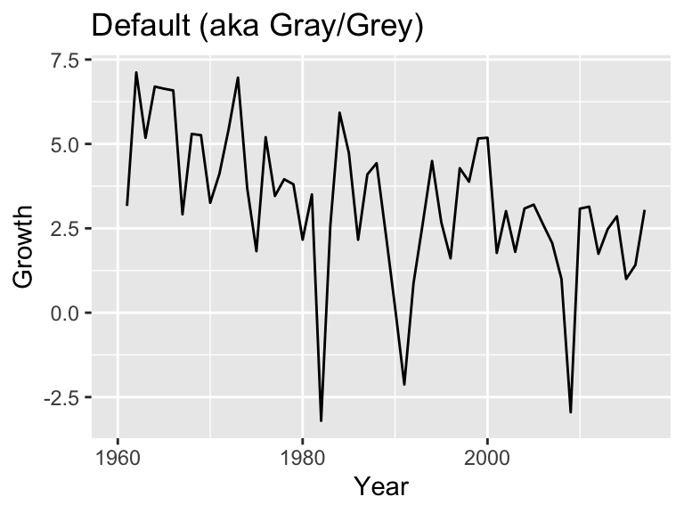
Light
Light grid and border.
c1 + theme_light()
Dark
c1 + theme_dark()
Classic
Arguably more minimalist than ‘Minimal’, with only x & y axis lines and no grid or border.
c1 + theme_classic()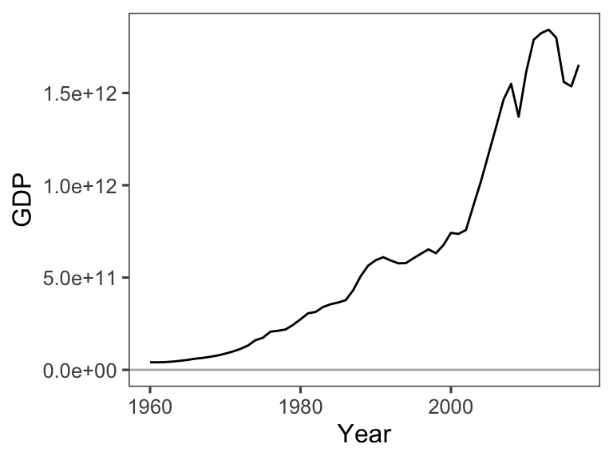
BW
Similar to ‘Light’ but darker border (at least only difference I can see in this case).
c1 + theme_bw()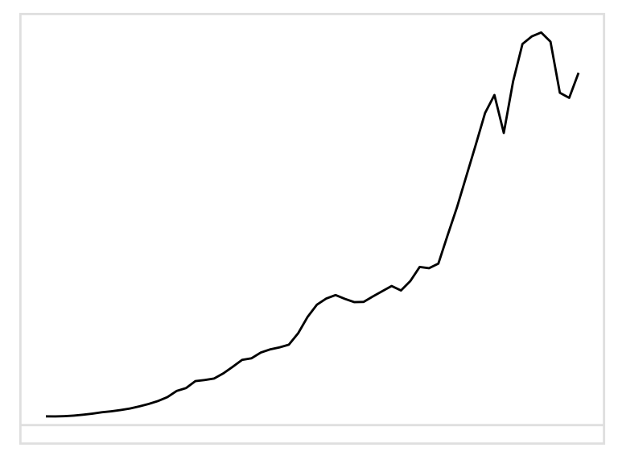
theme_economist (ggthemes)
c1 + theme_economist_white()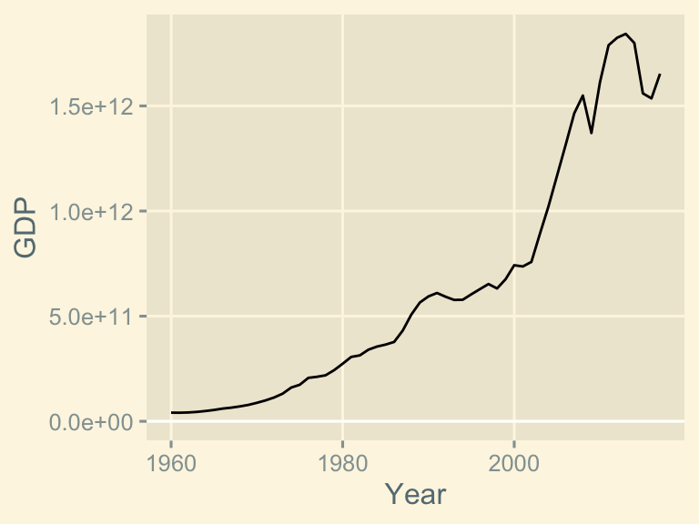
theme_tufte (ggthemes)
c1 + ggthemes::theme_tufte()Function to take chart info and process themes
A reusable function for ease of sampling different themes with different chart types.
# function to take chart info as input, apply themes, return variations with themes
chartThemeSampler <- function(chart_example) {
c_dflt <- chart_example + labs(title = "Default (aka Gray/Grey)")
c_m <- chart_example + labs(title = "Minimal") + theme_minimal()
c_l <- chart_example + labs(title = "Light") + theme_light()
c_drk <- chart_example + labs(title = "Dark") + theme_dark()
c_c <- chart_example + labs(title = "Classic") + theme_classic()
c_bw <- chart_example + labs(title = "BW") + theme_bw()
c_econ <- chart_example + labs(title = "theme_economist_white (ggthemes)") + theme_economist_white()
c_tufte <- chart_example + labs(title = "theme_tufte (ggthemes)") + theme_tufte()
cts <- list(c_dflt, c_m, c_l, c_drk, c_c, c_bw, c_econ, c_tufte)
for(i in 1:length(cts)) {
print(cts[[i]])
}
}Line Charts
# set chart for target style
chart_example <- chart_data_single %>% ggplot(aes(x=Year, y=Growth))+geom_line()
# use function to get collection of charts with different themes
# prints charts in accordance with size and layout settings
chartThemeSampler(chart_example)
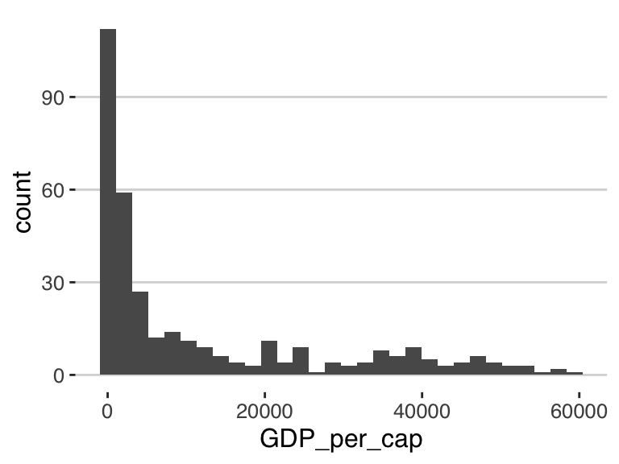

Column (Bar) Charts
# set chart for target style
chart_example <- chart_data_single %>% ggplot(aes(x=Year, y=Growth))+geom_col()
# print charts in different themes
chartThemeSampler(chart_example)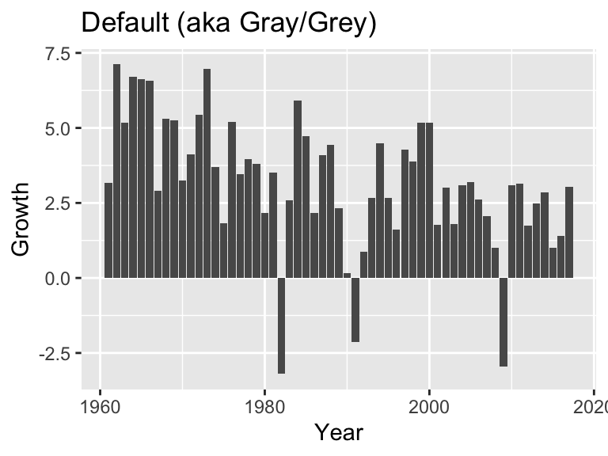

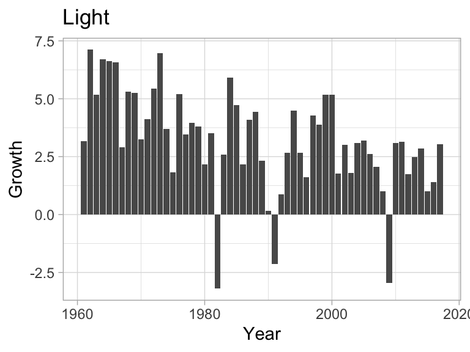
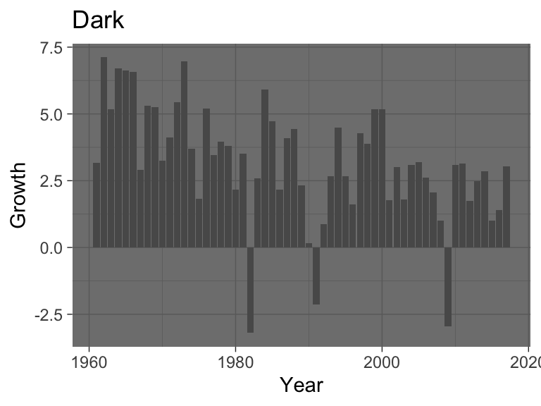


Column Charts with Faceting
chart_example <- chart_data_select %>% filter(Year >= 2000) %>%
ggplot(aes(x=Year, y=Growth))+geom_col()+
facet_grid(Code~.)
chartThemeSampler(chart_example)
Boxplots
chart_example <- chart_data_select %>%
ggplot(aes(x=Code, y=Growth))+geom_boxplot()
chartThemeSampler(chart_example)


Mods
Test out minor modifications to built-in themes.
Function for mods
# takes list of chart settings plus additional theme definition as inputs and combines
chartMod <- function(charts, theme_def) {
#theme_def <- theme_light() + theme(panel.grid = element_blank())
for(c in 1:length(charts)) {
chart_mod <- charts[[c]] + theme_def
print(chart_mod)
}
}Light without grid lines
- theme_light, with border
- no gridlines
- geom_hline for line at 0 on y-axis
chart_line <- chart_data_single %>% ggplot(aes(x=Year, y=Growth))+
geom_line() +
geom_hline(yintercept = 0, color='darkgrey')
chart_col <- chart_data_single %>% ggplot(aes(x=Year, y=Growth))+
geom_col()+
geom_hline(yintercept = 0, color = 'grey')
chart_col_facet <- chart_data_select %>% filter(Year >= 2000) %>%
ggplot(aes(x=Year, y=Growth))+
geom_col()+
facet_grid(Code~.) +
geom_hline(yintercept = 0, color = 'lightgrey')
chart_box <- chart_data_select %>%
ggplot(aes(x=Code, y=Growth))+
geom_boxplot() +
geom_hline(yintercept = 0, color = 'grey70')
# set list of charts
charts <- list(chart_line, chart_col, chart_col_facet, chart_box)
# set theme to apply
theme_def <- theme_light() + theme(panel.grid = element_blank())
# run function to show charts
chartMod(charts, theme_def)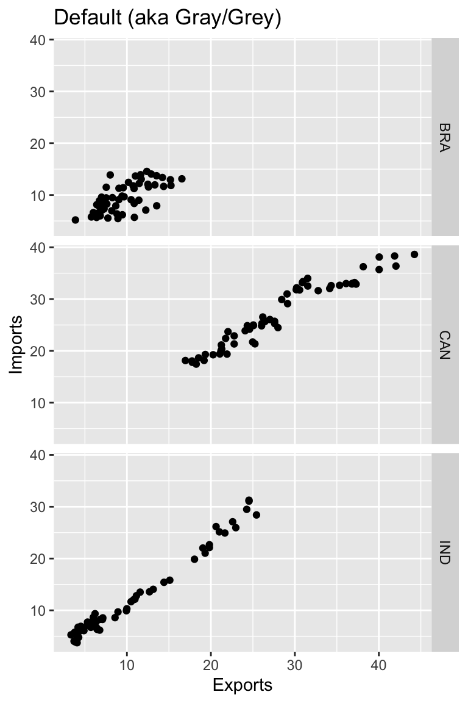
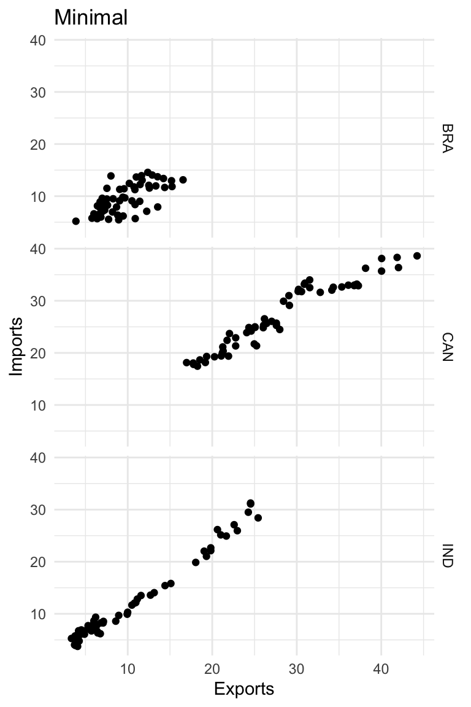
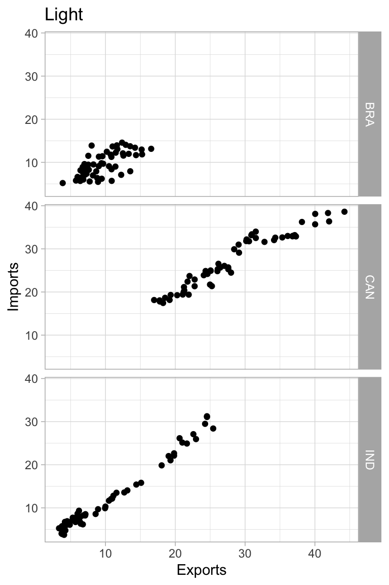

Light wth major gridlines only
Major gridlines in with color lightened and size reduced.
# use same chart definitions as above
# set list of charts
charts <- list(chart_line, chart_col, chart_col_facet, chart_box)
# set theme to apply
theme_def <- theme_light() + theme(panel.grid.major =
element_line(color = 'grey80', linewidth = 0.1),
panel.grid.minor = element_blank())
# run function to show charts
chartMod(charts, theme_def)